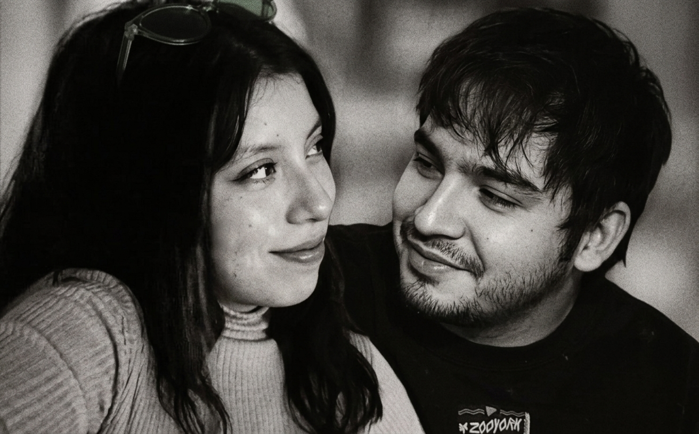
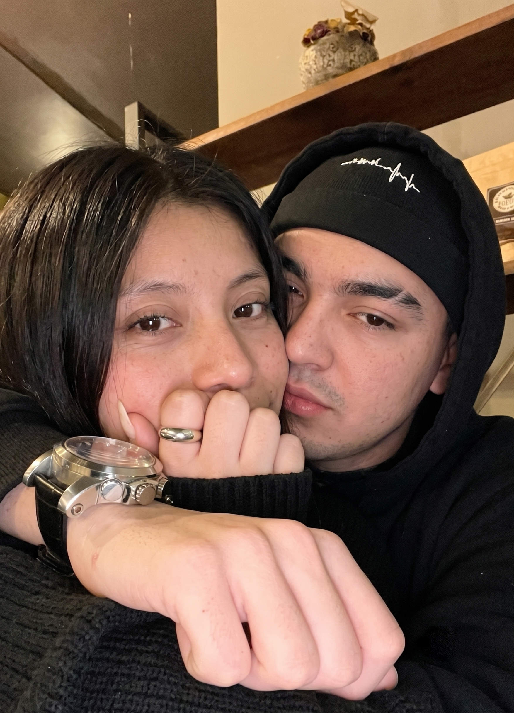

Quiero que te tomes el tiempo que necesites para leer todo atentamente. Sinceramente me di cuenta que en tan poco tiempo puedo amar a alguien cómo si conociera a esa persona de toda la vida, me hiciste entender que no es necesario tocar a esa persona para sentirla cerca, entendi lo valioso que es el tiempo y lo bonito que es pasar ese tiempo junto a ti. Gracias por ser esa persona que acaricia mi corazón con solo una mirada por la mañanas, gracias por ser aquella mujer que alegra mis mañanas, tardes y noches, porque a pesar de estar teniendo un dia horrible aqui en mi casa, tu haces que cada mirada tuya se sienta cómo mi verdadero hogar, haces que mis latidos bajen y que mis piernas dejen de tiritar, haces que mis brazos quieran abrazarte y que mis labios quieran besarte todo el dia, provocas tantas cosas en mi que es dificil explicarlo todo en solo un texto...

Desliza para ver más
Se que llevamos pocas semanas conociendonos, pero realmente siento que desde el primer momento me enamore de ti, desde esa llamada tuya, desde esos mensajes, cuando vi tus fotos dije "ay dios, es que de verdad es muy hermosa para estar hablando con alguien cómo yo", no me la podia creer, mis estandares estaban por el piso, hasta que llegaste tu preciosa, realmente me haces sentir muchas cosas lindas me haces querer levantarme por las mañanas(aunque a veces ni duerma), pero me haces querer salir adelante, me haces querer esforzarme por mi 20 veces mas de lo que ya estaba haciendo. Eres la luz de mi habitación oscura, eres quien realmente espere encontrar toda la vida, me haces muy feliz. Se que a veces quizas podemos tener discusiones por equis cosas, pero siento que es normal igual, osea sobre todo para dos personas que son intensas y que pues ya piensas casarse(porque yo si quiero), y realmente sea asi siempre o no, te amaré, voy a entenderte siempre, siempre encontraré la forma en que estes tranquila y puedas tener la confianza de decirme y contarme tus cosas, aunque tu digas na mi amor no importa, a mi si, porque se que cada cosa la sobre piensas miles de veces por segundo y yo no quiero que mi princesa ande mal. Se que este es el comienzo de una muy linda historia, y aprovechando que es el comienzo pues queria decirte que estaré con usted en las buenas y en las malas. No quiero que tengas miedo mi vida, no quiero que pienses constantemente que te dejaré por nuestras discusiones por muy grande que sean, quiero que sepas que a pesar de todo lo que pase yo estaré ahi a tu lado amandote y apoyandote hasta el fin de nuestros dias. Gracias Marisol por ser quien eres, eres lo mejor que me ha pasado en la vida. Luego de todo esto quisiera preguntarte algo mi amor,
Te amo con todo mi corazón mi amor y realmente quiero que esto sea enterno, quiero que vivamos, disfrutemos y nos amamemos por siempre. no olvides que siempre te amaré y que eres el amor de mi vida y eso no lo cambiará nada ni nadie. DESDE HOY 26-07-26 HASTA EL FIN DE NUESTROS DIAS❤️.
